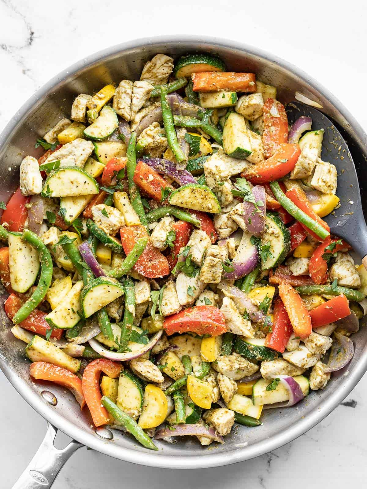

Easy Pesto Chicken and Vegetables

Description
This Easy Pesto Chicken and Vegetables meal prep is super fast and easy, and holds up well in the fridge for tasty lunches all week!
Ingredients
- 3 zucchini
- 3 yellow squash
- 1 red onion
- 2 Tbsp cooking oil
- olive oil preferred, but can substitute avacado oil
- 1.5 lbs. boneless, skinless chicken breasts
- 2 cups frozen greenbeans
- 2 cups pesto
- 1/8 tsp salt
- 1/8 black pepper
- 2 Tbsp grated parmesan
Instructions
- Chop the yellow squash, zucchini, and slice the red onion. I like to make different shapes for each vegetable, but aim to make the pieces all around the same size.
- Cube the chicken breasts into ½-inch pieces.
- Add the cooking oil to a large skillet and heat over medium-high. Once the skillet and oil are very hot, add the chicken and sauté until the chicken pieces are opaque (3-5 minutes, the chicken will continue to cook as you add vegetables).
- Add the green beans to the skillet and sauté for 1-2 minutes more, or just until thawed.
- Add the red onion to the skillet. Sauté for 1-2 minutes more. If water is beginning to pool in the skillet, turn the heat up slightly. It should be hot enough that the water released from the vegetables evaporates quickly.
- Add the yellow squash and zucchini to the skillet and continue to sauté 2-3 minutes more, or just until the squash softens slightly.
- Turn the heat off, add the pesto to the skillet, and stir until everything is coated. Give the vegetables a taste and add salt, pepper, or more pesto if desired. Top with a light sprinkle of Parmesan just before serving.
Notes
You may need more or less pesto, salt, pepper, or parmesan cheese depending on the volume of your veggies and personal taste